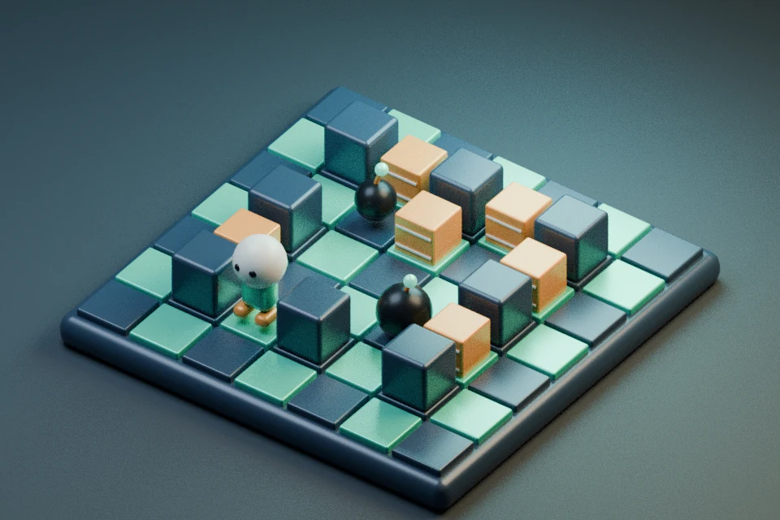

先看撤离方向，再放炸弹。拆砖收字，清敌进门。
可选小关 · 无敌人 / 无升级 / 无短护 · 碰火结束
方向键 / WASD 移动；空格 / J 放弹；P 暂停；M 静音。手机使用屏幕按钮。
普通局拼完整词后可按 E 使用一次 2 秒短护；掉命失去未用短护，放弹仍须撤离。字母路线按阻隔与步距估算，不保证最安全或最优。
两种小关固定初级引信 2.1 秒、火力 2、容量 3。按 G → O 收集后进右下星门，可直接选择或入门成功后继续进阶。没有奖励带出。
本独立候选的纪录和声音偏好与正式版、旧 QA 隔离。

远征补给 · 每轮选一项
可选小关 · 无纪录 / 无奖励带出
行动结束
本轮未通关